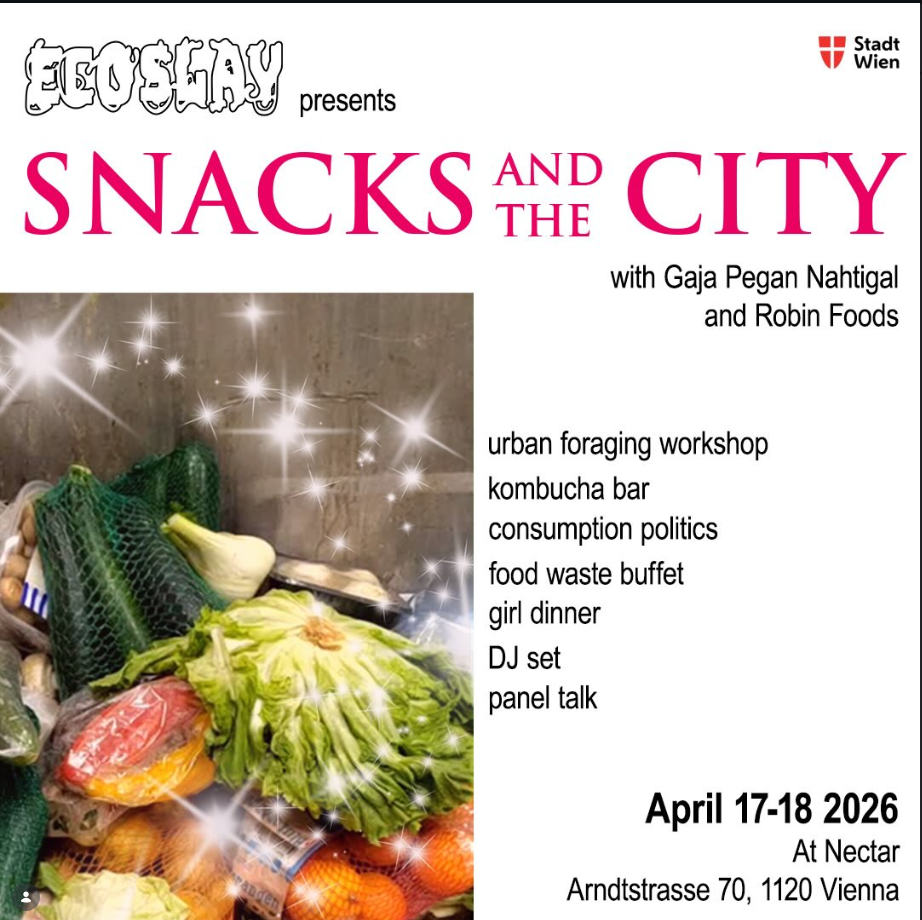
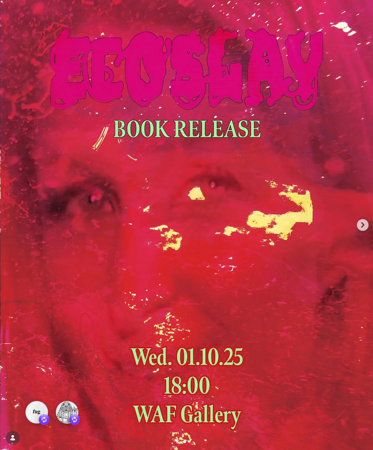
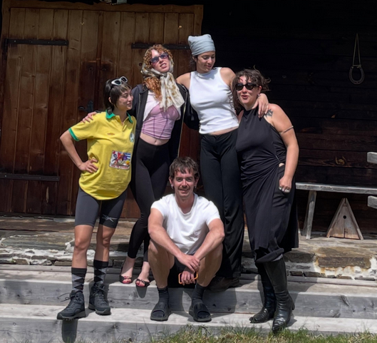

Ecoslay is a movement and a method to absorb intersectional environmentalism into mainstream culture.
What is Ecoslay About
Ecoslay is both an organisation and a cultural movement operating at the intersection of art, science communication, and cultural practice. We use the language and tactics of pop culture to make ecosocial issues engaging, accessible, and to spark motivation in the current gloomy times. We thrive towards a collective regenerative society that protects the integrity of the people and the non-human world.
We currently operate as an interdisciplinary collective of artists, researchers, and cultural workers based between Vienna and Berlin. We are a registered association (Verein) under Austrian law (registration number: XXXX).
Ecoslay thrives through community. We have worked with an extended network of collaborators across the cultural and creative sectors: AdoAptive, Science Meets Art, Fugue-Fuge-Fuga, Wiener Art Foundation, We are all girls online, Compost Collective, XXX.
But Ecoslay is not a fixed structure, but an evolving process: an experiment, a playground, and a shared inquiry. We invite anyone interested to take part in joining us to shape and experiment with this new cultural movement. Reach out to us for collaboration!
Our Mission
- Hope is (not) dead! Fighting doom and apathy, with a radiant positive energy that also acknowledges the darkness of our times
- Connecting cultures and socio-ecological issues to ignite desire for action
- Offering content that is highly appealing and/or fulfilling + bringing sharp perspective about urgent issues
- Articulate dry scientific facts or alternative forms of knowledge like traditional ancient wisdom in more engaging forms
- Shift the perspectives the mainstream culture has on the non-human world and key societal issues such as workers protection, social inequalities, …
Magazine
Issue 01: Ecoslay, an Anthology
Ecoslay is a movement – and a method – to absorb intersectional environmentalism into popular culture and to rethink the way we communicate ecological and social crises. And what better way to infiltrate the mainstream than through the seductive yet ambiguous figure of the Girl? In this first publication, eight international artists, researchers, and cultural workers provide their interpretation of Ecoslay through girlhood as a cultural force for environmental action.
Edited by Camille Belmin.
With contributions by Diana Andrei, Camille Belmin, Ramona Gomez, Lisa Jäger, Alokin Jaywalker, para-Center for Island Research, Daniel H. Pineda, Nari Sarmini & Janina Weißengruber.
Cover and graphics by Daniel H. Pineda. Layout and typesetting by Janina Weißengruber.
Published by fugue–fuga–fuge.
The book was supported by the Student Union of the University of Applied Arts Vienna.
Get Your Copy
Ecoslay, an Anthology is available to order by email at ecoslay@protonmail.com, to contact our publisher ue-a-e.com, or at the following bookstores:
Berlin
Vienna
Copenhagen
Budapest
New York
Paris
Bratislava
Open Call
We are currently accepting submissions for our upcoming issue. We welcome work from writers, artists, and researchers at any stage of their career.
Send proposals, portfolios, or inquiries to submissions@ecoslay.com. Deadline rolling.
Events
Upcoming Events

Details to be announced — stay tuned.
Past Events

The line up featured a book presentation from collective founder Camille Belmin, a performative poetry reading from collective member and artistic contributor Ramona Gomez, followed by a celebratory reception with drinks. The evening was soundtracked by material experimental musician duo Musique Plastique.
The profits of 803.24 euros from the first edition were donated to The Palestinian Institute for Climate Strategy, an NGO dedicated to integrating ecological resilience and steadfastness with strategies to confront the challenges of ecocide, apartheid, and colonialism in Palestine.
This was a work of love and community, between 8 international artists, researchers, and cultural workers — above all FRIENDS — who worked and discussed passionately (and voluntarily) on the topic for a year.
More information about the Berlin book release will be announced here.
More information about ECOSLAY's participation at CTM Berlin will be announced here.
More information about the Girl Online symposium will be announced here.
Team

Members
Diana Andrei
Diana Andrei, myth to many and legend to some, is a transdisciplinary artist, filmmaker, and writer based in Vienna and (sometimes) Marseille. Living in the trenches of reality, where everything and nothing ever cross paths, she enjoys exploring questions of (hu)man-made artificiality, with a special focus on how ideologies and social doctrines materialize within and from our worlds. Flirting with various media like film, performance, sculpture, text, and YouTube comments, her works become materializations themselves, participating in the entangled discourse of how we (re)create our realities.
Contact
For general inquiries, submissions, or collaboration proposals, reach out to hello@ecoslay.com.
Follow us on Instagram and Twitter for updates on publications and events.